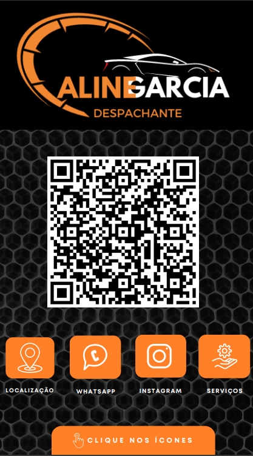

Confira nessa página, Tudo oque temos a oferecer
Já prepara a pipoquinha e o refri pois não é pouca coisa não kkk
Logotipo e Designs em Geral
Somos especialistas no quesito design, nossa equipe conta com profissionais pós graduados na área do Design
Vale ressaltar que NÃO trabalhamos com nenhum tipo de arte impressa, apenas arte DIGITAL
Confira alguns exemplos em Design
Passe o mouse sobre a imagem, ou toque com o dedo se estiver pelo celular, para ampliar o tamanho dela


Cartão de visitas Digital
O cartão digital é uma excelente ferramenta de marketing e vendas para a sua empresa
com ele você consegue fazer do seu cliente a sua maior fonte de marketing e divulgação.
pois o seu cliente poderá enviar o cartão para quantas pessoas ele quiser, pois o cartão não possui um limite de compartilhamentos.
Ou seja, o cartão utiliza na prática a famosa frase, o melhor marketing é o feito de boca em boca.
Confira abaixo uma lista de funcionalidades do cartão digital:
- Chamar no whatsapp
- Mapa com rota via Google Maps
- Link para redes sociais
- Link para website
- Lista de serviços
- Cardápio digital
- Portifólio
- Página de promoções da semana/mês
- Fotos/Videos de serviços
Confira alguns exemplos

Caso queira testar os cartões, entre em contato e solicite que um para testar as funcionalidades
Desenvolvimento de websites e Serviços de Web/Design
Como é do conhecimento de todos, estamos vivendo um tempo onde a tecnologia está em ascenção e em constante evolução
Então é de suma imortância, pegar uma carona nessa onda e evoluir junto...
Nosso dever, é entregar facilidade para nossos clietes, e um website facilita a vida de nossos clientes e nos aproxima dele
de forma que ele pode realizar compras e solicitar serviços, sem precisar sair da comodidade de sua casa...
Vamos juntos embarcar nessa era e desenvolver facilidades e alavancar as vendas, pois um website é um canal de duas vias
ao mesmo tempo serve para vender e para divulgar a sua marca, com ele você pode atingir públicos que antes eram inalcançaveis para você
Como exemplo, temos esse web site e também o site S&W Barbershop
que está em faze de Desenvolvimento, então você pode ter o prazer de acompanhar todo o processo de Desenvolvimento dele....
Assim como a tecnologia, a nossa empresa também está em constante Evolução
Atualizamos o nosso site semanalmente, então você é sempre bem-vindo para vir conferir as novidade por aqui
Muito obrigado por sua atenção
Att. CWTECH